Maurício C. de Oliveira
Chapter 2: Dynamic Systems
linearcontrol.info/fundamentals
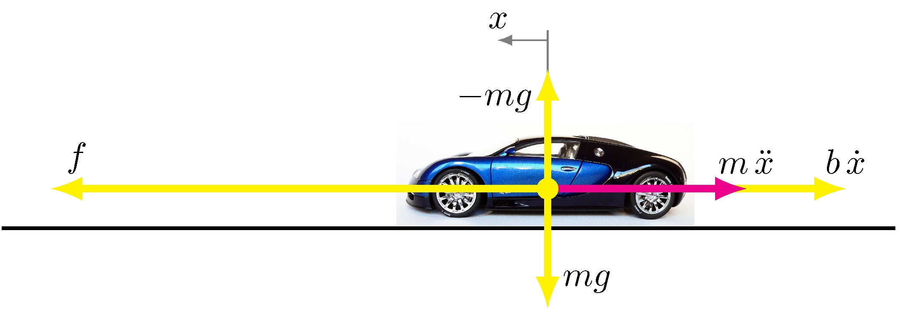
Longitudinal car model
Newton’s law
\[\begin{align*} m \, \dot{v}(t) + b \, v(t) = f(t) \end{align*}\]
Force model
\[\begin{align*} f(t) &= p \, u(t) \end{align*}\]
Ordinary differential equation
\[\begin{align*} \dot{y}(t) + \frac{b}{m} \, y(t) = \frac{p}{m} u(t) \end{align*}\]
Basic element: integrator
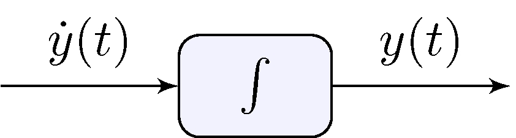
Longitudinal car model
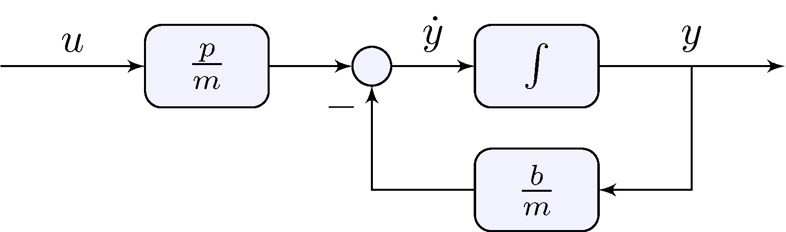
\[\begin{align*} \dot{y}(t) &= \frac{p}{m} u(t) - \frac{b}{m} \, y(t) \end{align*}\]
Note the presence of feedback!
Longitudinal car model
\[\begin{align*} \dot{y}(t) + \frac{b}{m} \, y(t) = \frac{p}{m} u(t) \end{align*}\]
Constant pedal intput
\[\begin{align*} u(t) = \tilde{u}, \quad t \geq 0 \end{align*}\]
Particular solution
\[\begin{align*} y_P(t) &= \tilde{y} = \left ( \frac{p}{m}\middle/\frac{b}{m} \right ) \tilde{u} = \frac{p}{b} \tilde{u} \end{align*}\]
\[\begin{align*} \dot{y}(t) + \frac{b}{m} \, y(t) = 0 \end{align*}\]
\[\begin{align*} y_H(t) &= e^{\lambda t} \end{align*}\]
\[\begin{align*} \dot{y}_H(t) + \frac{b}{m} y_H(t) = \left (\lambda + \frac{b}{m} \right ) \, e^{\lambda t} = 0 \quad \implies \quad \lambda + \frac{b}{m} = 0 \end{align*}\]
\[\begin{align*} \dot{y}(t) + \frac{b}{m} \, y(t) = \frac{p}{m} \tilde{u} \end{align*}\]
\[\begin{align*} y(t) &= y_P(t) + \beta \, y_H(t) = \tilde{y} + \beta \, e^{\lambda t} \end{align*}\]
\[\begin{align*} y(0) = \tilde{y} + \beta &= y_0 & & \implies & \beta &= y_0 - \tilde{y} \end{align*}\]
\[\begin{align*} y(t) &= \tilde{y} \left (1 - e^{\lambda t} \right ) + y_0 \, e^{\lambda t}, & \lambda &= -\frac{b}{m}, & \tilde{y} &= \frac{p}{b} \tilde{u} \end{align*}\]
\[\begin{align*} y(t) &= \tilde{y} \left (1 - e^{\lambda t} \right ) + y_0 \, e^{\lambda t}, & \tilde{y} &= 1 \end{align*}\]
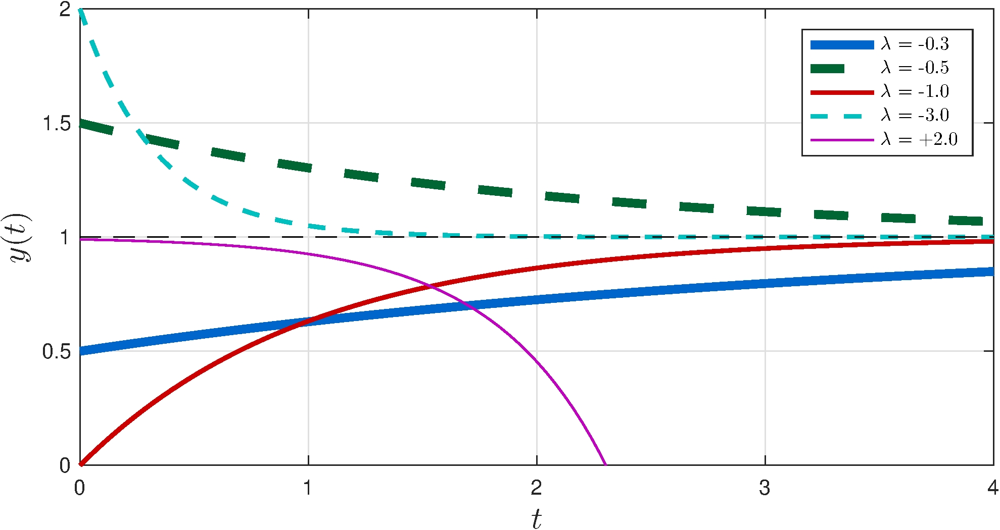
Time-constant
\[\begin{align*} \tau = \left \{ t : y(t) = \left (1 - e^{-1} \right ) \tilde{y} \approx 0.63 \, \tilde{y} \right \} \end{align*}\]
\[\begin{align*} \tau = -\frac{1}{\lambda} \qquad y(\tau) \approx 0.63 \, \tilde{y}, \quad y(3 \tau) \approx 0.95 \, \tilde{y} \end{align*}\]
Rise-time
\[\begin{align*} t_r &= t_2 - t_1, & t_1 &= \left \{ t : y(t) = 0.1 \, \tilde{y} \right \}, & t_2 &= \left \{ t : y(t) = 0.9 \, \tilde{y} \right \} \end{align*}\]
\[\begin{align*} t_r &= \ln\left( 1 \middle/ 9 \right ) \, \lambda^{-1} = \ln(9) \, \tau \approx 2.2 \, \tau \end{align*}\]
Experiment
Zero initial velocity
Constant pedal excursion: \(\tilde{u} = 1\) in
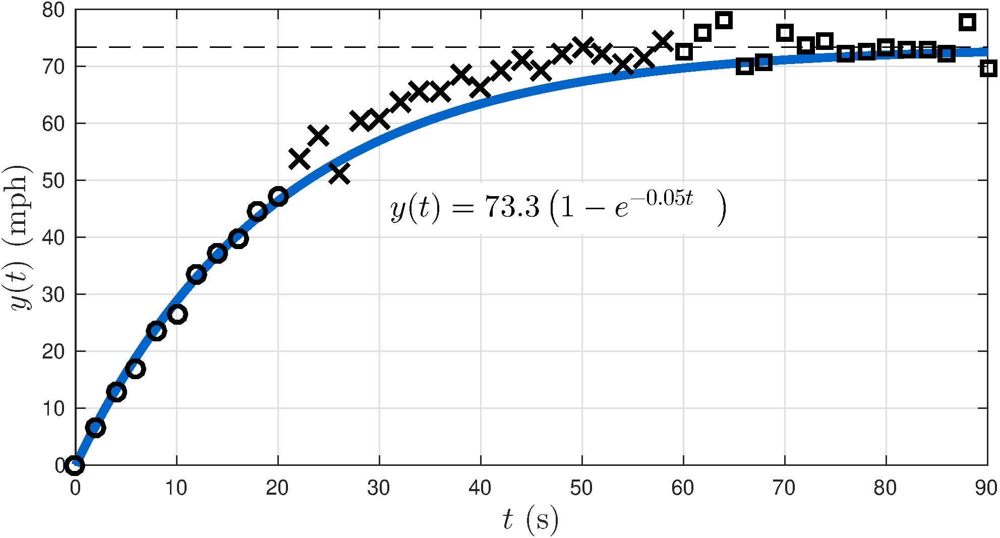
Squares: steady-state solution \(\implies \tilde{y} \approx 73.3 \text{ mph}\)
\[\begin{align*} r(t) &= 1 - \left. y(t) \middle/ \tilde{y} \right . = e^{\lambda t} & & \implies & \ln r(t) &= \lambda t \end{align*}\]
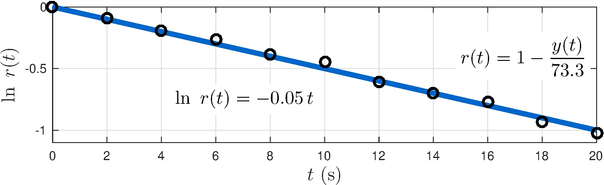
Circles: \(\lambda \approx -0.05 \text{ s}^{-1}\)
\[\begin{align*} \frac{b}{m} &= -\lambda \approx 0.05 \text{ s}^{-1}, \\ \frac{p}{\,b\,} &= \frac{\tilde{y}}{\tilde{u}} \approx 73.3 \text{ mph/in}, \\ \frac{p}{m} &= \frac{b}{m} \times \frac{p}{b} = -\lambda \times \frac{\tilde{y}}{\tilde{u}} = 3.7\text{ mph/(in s)} \end{align*}\]
\[\begin{align*} \dot{y}(t) + 0.05 \, y(t) = 3.7 u(t) \end{align*}\]
Experiment was conducted for \(u(t) = \tilde{u}\) constant but we wish model to hold for general \(u(t)\)!
Car model
Dynamic model
\[\begin{align*} \dot{y}(t) + \frac{b}{m} \, y(t) = \frac{p}{m} u(t) \end{align*}\]
Feedback controller
\[\begin{align*} u(t) &= K \, e(t), & e(t) &= \bar{y} - y(t) \end{align*}\]
Closed-loop system
\[\begin{align*} \dot{y}(t) + \left ( \frac{b}{m} + \frac{p}{m} K \right ) y(t) &= \frac{p}{m} K \bar{y} \end{align*}\]
\[\begin{align*} \dot{y}(t) + \left ( \frac{b}{m} + \frac{p}{m} K \right ) y(t) &= \frac{p}{m} K \bar{y}, & y(0) &= y_0, & \lambda &= - \frac{b}{m} - \frac{p}{m} K \end{align*}\]
\[\begin{align*} y(t) &= \tilde{y} \left (1 - e^{\lambda t} \right ) + y_0 \, e^{\lambda t}, & \tilde{y} &= \frac{\frac{p}{m} K}{\frac{b}{m} + \frac{p}{m} K} \bar{y} = \frac{\frac{p}{b} K}{1 + \frac{p}{b} K} \bar{y} \end{align*}\]
\[\begin{align*} \lambda &= - \frac{b}{m} - \frac{p}{m} K, & \tau &= -\lambda^{-1} = \frac{m}{b + p K} \end{align*}\]
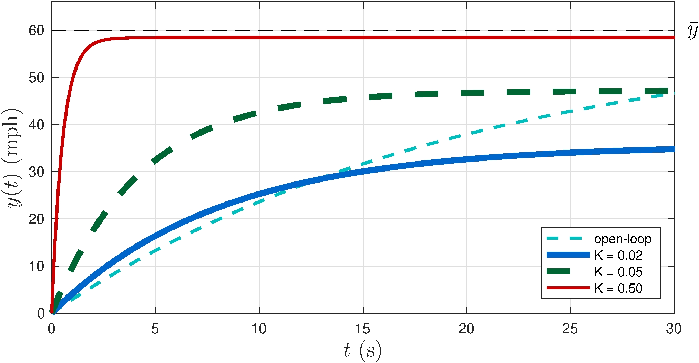
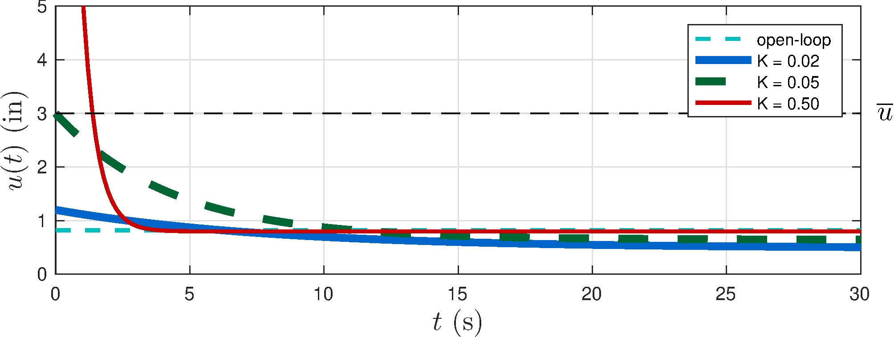
\[\begin{align*} u(0) = K e(0) = K (\bar{y} - y(0)) = K \, \bar{y} \end{align*}\]
\(\bar{y} = 60 \text{ mph } \implies u(t) > \bar{u} = 3 \text{ in for } K > 0.05\)!
\[\begin{align*} \lim_{t \rightarrow \infty} y(t) &= \tilde{y} = H(0) \, \bar{y}, & H(0) &= \frac{\frac{p}{b} K}{1 + \frac{p}{b} K} \\ \lim_{t \rightarrow \infty} e(t) &= \bar{y} - \tilde{y} = S(0) \, \bar{y}, & S(0) &= \frac{1}{1 + \frac{p}{b} K} \end{align*}\]
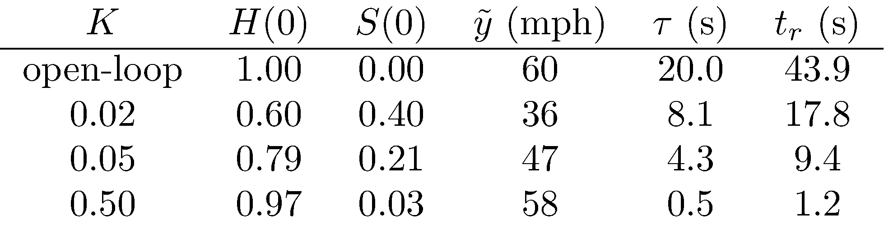
\(\bar{y} = 60 \text{ mph}\)
Output is rate-limited
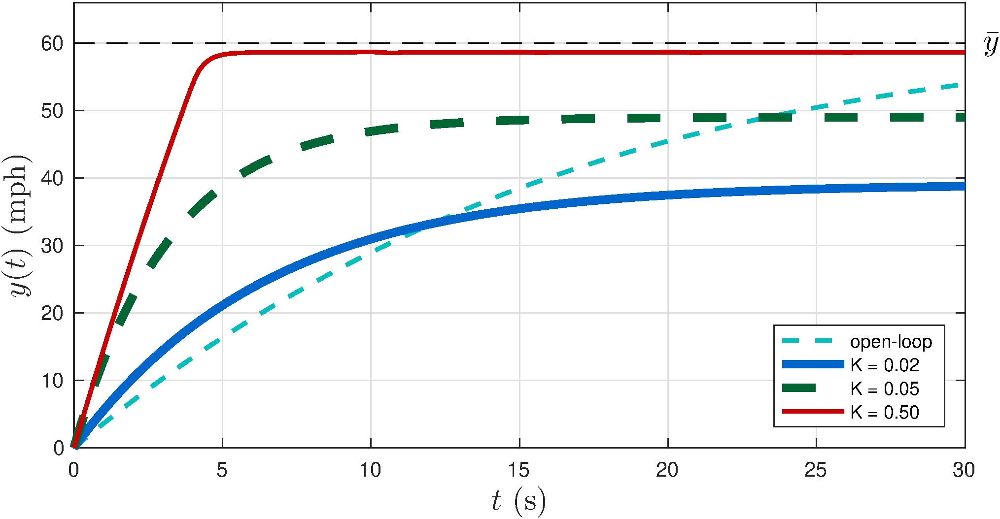
Control saturates
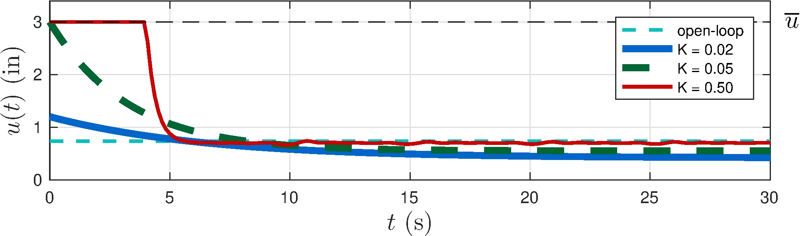
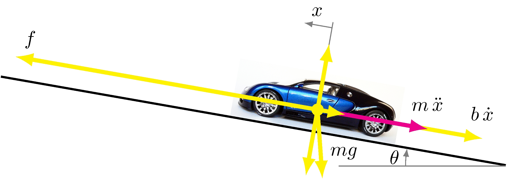
Car on inclined plane model
\[\begin{align*} \dot{y}(t) + \frac{b}{m} \, y(t) = \frac{p}{m} u(t) - g \sin (\theta(t)) \end{align*}\]
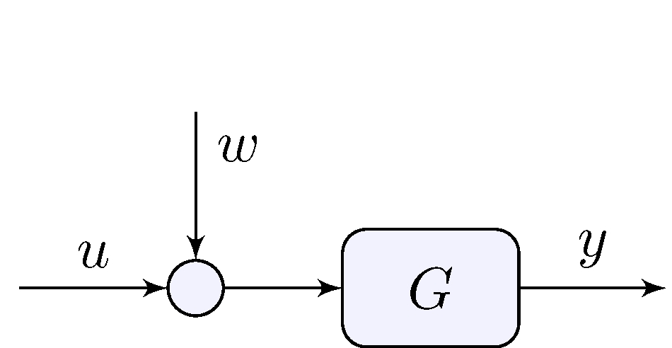
\[\begin{align*} \dot{y}(t) + \frac{b}{m} \, y(t) &= \frac{p}{m} \left ( u(t) + w(t) \right ), & w(t) &= - \frac{m g}{p} \sin(\theta(t)) \end{align*}\]
\[\begin{align*} \dot{y}(t) + \frac{b}{m} \, y(t) &= \frac{p}{m} \left ( u(t) + w(t) \right ) \end{align*}\]
\[\begin{align*} w(t) &= \bar{w}, \quad t \geq 0 \end{align*}\]
\[\begin{align*} u(t) &= K \, e(t), & e(t) &= \bar{y} - y(t) \end{align*}\]
\[\begin{align*} \dot{y}(t) + \left ( \frac{b}{m} + \frac{p}{m} K \right ) y(t) &= \frac{p}{m} \left ( K \bar{y} + \bar{w} \right ), \quad y_0 = H(0) \bar{y} \end{align*}\]
\[\begin{align*} y(t) &= H(0) \, \bar{y} + \left (1 - e^{\lambda t} \right ) D(0) \, \bar{w}, & H(0) &= \frac{\frac{p}{b} K}{1 + \frac{p}{b} K}, & D(0) &= \frac{p}{b} \, \frac{1}{1 + \frac{p}{b} K} \end{align*}\]
\[\begin{align*} \Delta y(t) = y(t) - H(0) \bar{y} &= \left (1 - e^{\lambda t} \right ) D(0) \, \bar{w} \end{align*}\]
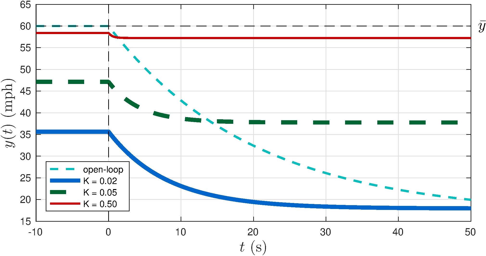
Toilet tank model
\[\begin{align*} \dot{y}(t) &= \frac{1}{A} u(t) \end{align*}\]
Ballcock valve
\[\begin{align*} u(t) &= K(\bar{y} - y) \end{align*}\]
Closed-loop model
\[\begin{align*} \dot{y}(t) + \frac{K}{A} y(t) &= \frac{K}{A} \bar{y}(t) \end{align*}\]
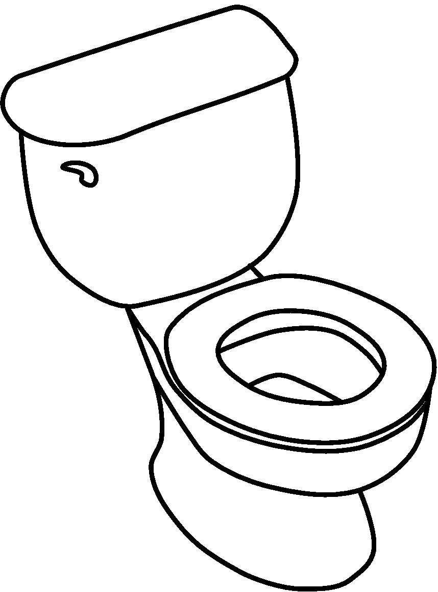
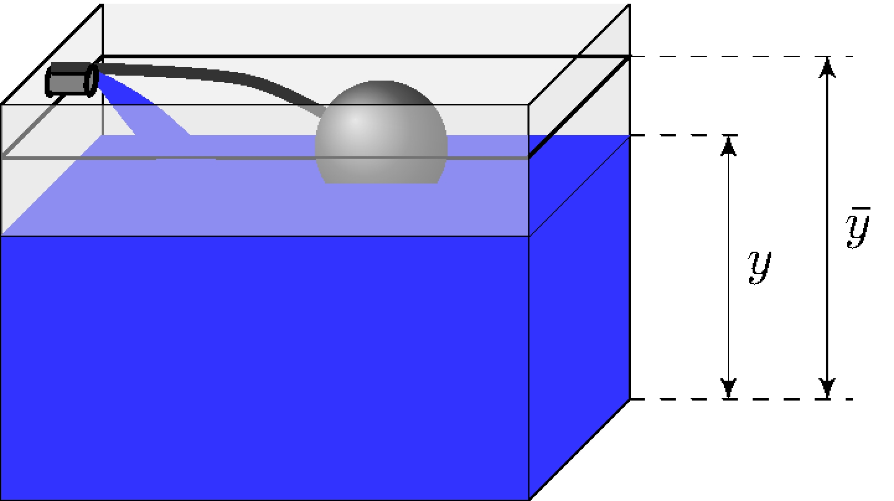
\[\begin{align*} \dot{y}(t) + \frac{K}{A} y(t) &= \frac{K}{A} \bar{y}(t), & y(0) &= y_0, & \lambda &= - \frac{K}{A} \end{align*}\]
\[\begin{align*} y(t) &= \tilde{y} \left (1 - e^{\lambda t} \right ) + y_0 \, e^{\lambda t}, & \tilde{y} &= \bar{y} \end{align*}\]
\[\begin{align*} \lim_{t \rightarrow \infty} y(t) &= \tilde{y} = H(0) \, \bar{y}, & H(0) &= 1 \\ \lim_{t \rightarrow \infty} e(t) &= \bar{y} - \tilde{y} = S(0) \, \bar{y}, & S(0) &= 0 \end{align*}\]
Integral action \(\implies\) zero tracking error!
Can we replicate that result in a more general setting? Answer is in Chapter 4